Introduction
Learning Objectives
This project will encompass the following learning objectives:
- Get familiar with AWS APIs for provisioning/de-provisioning EC2 instances.
- Get familiar with the concepts of Vertical and Horizontal scaling, and understand the differences between them.
- Get familiar with, and understand the need for Amazon's Elastic Load Balancing.
- Understand the limitations of Amazon's Elastic Load Balancing.
In this part of the project, we will learn how to programmatically manage AWS resources and explore a deployment scenario involving infrastructure provisioning and load-balancing. You will also get introduced to the concepts of vertical and horizontal scaling.
The Scenario
The Massive Surveillance Bureau (MSB) gathers data from millions of sources. This data is used to provide intelligence to a group of authorized agents. You wish to join this challenging and lucrative organization as a system architect. A system architect at the MSB designs and deploys a distributed network of web servers.
Timely information is extremely valuable to MSB agents, so performance guarantees must be met when considering system design. Thus, MSB systems must be able to handle a varying load and scale accordingly, while minimizing cost.
Over the next several weeks, you will experience the career of a system architect at the MSB.
This week you will attend a technical interview where the MSB hires system architects who meet their requirements. CMU has assigned the 15319/15619 course team to prepare you for this interview.
All the best!!!
Resource Tagging
For this project, assign the tag with Key: Project and Value: 2.1 for all resources
Building Blocks
Let us start by introducing the building blocks of this project (aka Project 2).
The Massive Surveillance Bureau receives traffic from millions of devices at hundreds of distributed web proxies. These proxies then forward data to a large number of data centers for storage and processing. At the start, you get to control one of these clouds (shown below).
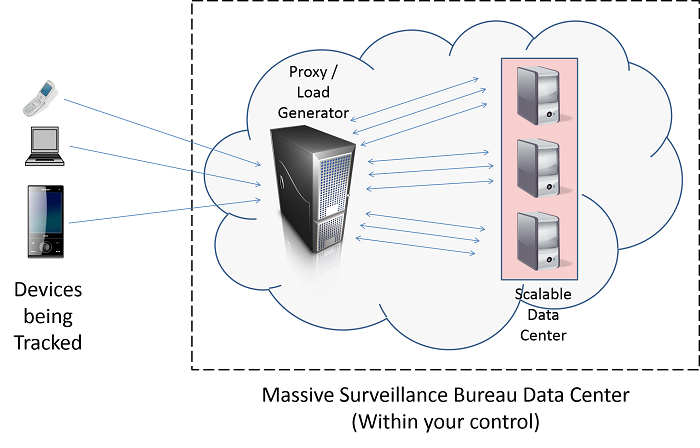Figure 1: MSB's System Architecture
Your cloud receives data and service requests at a proxy/load generator. Your job is to correctly handle these requests by passing them to a data center that comprises of multiple VM instances. These VMs either store the given data for further processing, or provide the information an agent is asking for. A new use case for this cloud will be explained every week.
The Load Generator and Data Center Instances
For each student in this course, the MSB has provided access to a single load generator AMI. They also give you an image of the data center AMI. Both these images are closed, so when you launch them, you will not be able to SSH in. Instead, you will be interacting with the web interfaces on each.
Project AMIs
For this project, the AMI IDs are Load Generator (LG) : ami-4c4e0f24 and Data Center Instance (DCI): ami-b04106d8
For this project, use only m3.medium instance for Load Generator (LG) or your test result will be invalid.
Please start an m3.medium instance of the load generator and an m1.small instance of the data center. Configure the security groups to allow incoming (HTTP) requests on port 80. It is highly recommended that you use spot instances if the spot price is less than the normal price. However, make sure that you tag the spot instances once they have been launched because the tags that you create while submitting a spot request don't propagate to the instances once they are launched.
The following image is a screenshot of the load generator interface:
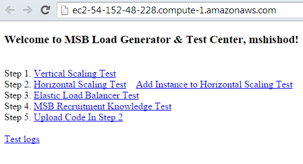Figure 2: Load generator user-interface
The following image is a screenshot of the data center instance interface:
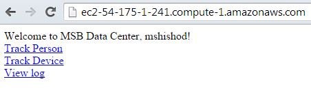Figure 3: Data center user-interface
The data center instances receive sensitive tracking information about people or devices. You can see some examples by clicking on Track Person or Track Device in the data center interface. Please refresh those pages a few times to see how the MSB gathers new sources of data (this can be by installing bugs on mobile devices, spyware on laptops and desktops, and in rare cases even implanting an RFID tracking chip on people).
You should see something like this in the Track Person page:
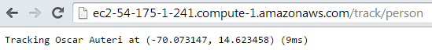Figure 4: Example of the information stored in the data center instances
Using the Load Generator
Before CMU sends you to take the recruitment test, we want you to understand the amount of load different types of instances can handle.
To see the amount of load a data center instance experiences, click on your m1.small data center instance in the EC2 Web Console, and select the monitoring tab. Click on the tab that says Enable Detailed Monitoring. This gives you minute-by-minute updates of the resource utilization of your m1.small data center instance.
Now you can activate the load generator. To do so please visit the following URL on your load generator http://<your-load-generator-instance-dns-name>/test/vertical
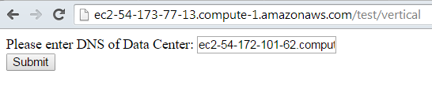Figure 5: Starting a vertical scaling test from the load generator user-interface
Here you should submit your Data Center's m1.small Instance DNS. Click on submit.
Note that this HTML form can be submitted in code by making a HTTP GET request in the language of your choice to: http://<your-load-generator-instance-dns-name>/test/vertical?dns=<your-instance-dns-name>. This will be useful later in the project.
Once you submit, the following page will be displayed. Click on ’Test’ to view the test log.
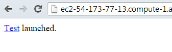Figure 6: Vertical scaling test started
When you submit the /test/vertical form, the load generator begins sending some traffic to the m1.small data center instance. To view this load graphically, go to the monitoring tab in the EC2 console. You should note down the CPUUtililzation during this testing period (as the test is probably not synchronized with CloudWatch, use the middle three minutes of the five minute test window). Please click on the small CPUUtilization graph to view the actual Utilization at each minute of the test.
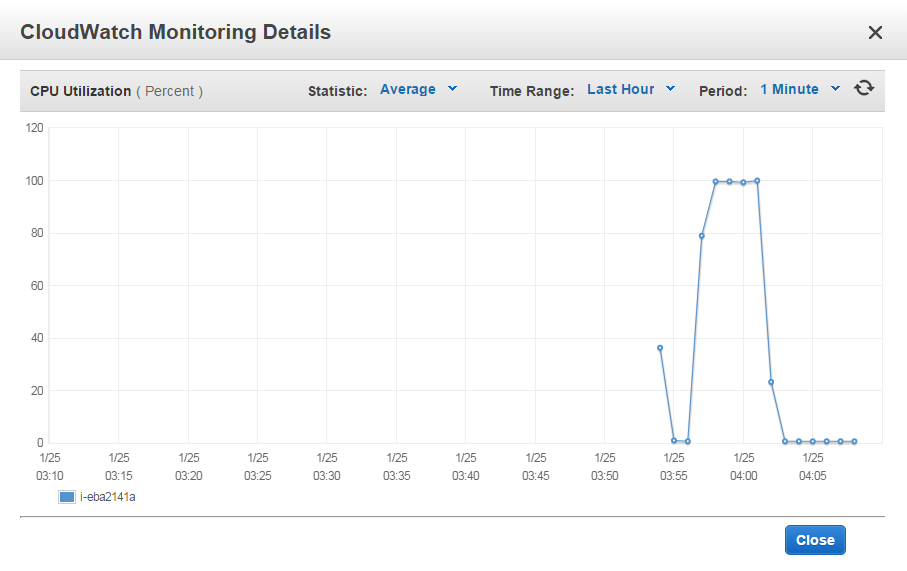Figure 7: Monitoring instances through cloud watch
Each time you launch a test from this URL, it will generate a steady load for five minutes and then stop.
The MSB measures system performance based on the requests handled by the data center instance every second (rps). To view the average rps for your test (generated at one-minute intervals), please visit: http://<your-load-generator-instance-dns-name>/log?name=test.<testId>.log
Please pay attention to the MSB validation message at the end of test log when test is finished. 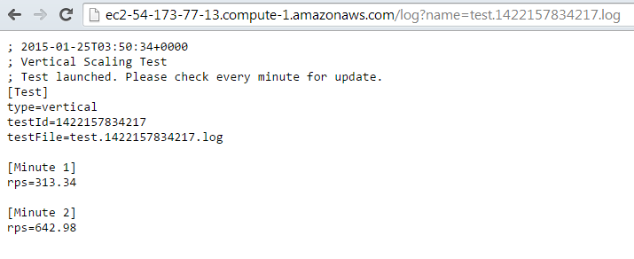Figure 8: Test logs for vertical scaling test
Amazon Web Service APIs
APIs and SDK access for AWS
The other thing to learn before joining the MSB is how to programmatically create and manage AWS resources.
The Amazon Web Services SDK includes different kinds of API packages which developers can use to create and manage resources and applications running on AWS. This allows developers to programmatically automate management tasks on AWS. Almost all of the functionality in AWS is accessible via Command Line Interface (CLI), APIs or SDK. We will go through some of the most popular AWS tools now. The following video provides a brief introduction to AWS SDKs:
Video 1: Introduction to AWS SDKs
Amazon Command-Line Interface API Tools
For those of you who prefer to use bash scripts to run cloud jobs, the Amazon CLI tools allow for command-line manipulation of various facets of AWS. The following CLI-tools are available from AWS:
- AWS CLI Tool: The EC2 API tools allow you to create, manage and terminate many AWS Services
Students who plan on using the CLI tools within bash/shell scripts should:
- Download and install the CLI tools on your development machine.
- Add the path of the CLI tools into $HOME/.bashrc
- Setup their AWS credentials within the $HOME/.bashrc file.
Most of the above API tools require you to specify your AWS Credentials (Either your AWS Access Key ID/Secret Key or X.509 Certificates).
AWS SDK for Java
The AWS SDK is available for multiple languages, including, Java, .NET, node.js, Ruby etc. The AWS SDK for Java has been developed by Amazon and is a fully featured SDK, which includes:
- The AWS Java Library: Java packages, classes and methods (i.e. an API) that allow you to program AWS using Java. The API hides much of the complexity that is otherwise involved in using a REST/SOAP-based HTTP interface including authentication, request retries and error handling.
- Code Samples: Code samples that demonstrate the use of an API to perform various tasks on AWS.
- Eclipse support: Includes an Eclipse plugin that allows developers to create Java apps that work with AWS from within the Eclipse IDE.
Amazon EC2 API
You are already quite familiar with Amazon EC2 through the AWS Management Console. The AWS SDK exposes the EC2 management functionality provided by the AWS Management Console and the command line tools via programming interfaces in Java. All of the EC2 related functionality is encapsulated in the com.amazonaws.services.ec2 package. You can use the EC2 classes and methods to:
- Create EC2 Keypairs
- Create Security Groups for Instances and open ports (also known as authorize security group ingress)
- Create, launch, stop, reboot and terminate instances on EC2.
For example in the EC2 API, the following java code snippet will launch an instance:
Walkthrough
Launching an Instance using the AWS SDK for Java
//Load the Properties File with AWS Credentials Properties properties = new Properties(); properties.load(RunInstance.class.getResourceAsStream("/AwsCredentials.properties")); BasicAWSCredentials bawsc = new BasicAWSCredentials(properties.getProperty("accessKey"), properties.getProperty("secretKey")); //Create an Amazon EC2 Client AmazonEC2Client ec2 = new AmazonEC2Client(bawsc); //Create Instance Request RunInstancesRequest runInstancesRequest = new RunInstancesRequest(); //Configure Instance Request runInstancesRequest.withImageId("ami-b04106d8") .withInstanceType("t1.micro") .withMinCount(1) .withMaxCount(1) .withKeyName("project1_test") .withSecurityGroups("MySecurityGroup"); //Launch Instance RunInstancesResult runInstancesResult = ec2.runInstances(runInstancesRequest); //Return the Object Reference of the Instance just Launched Instance instance=runInstancesResult.getReservation().getInstances().get(0);
Listing all running instances using the AWS SDK for Java
//Load the Properties File with AWS Credentials Properties properties = new Properties(); properties.load(EC2CWTest.class.getResourceAsStream("/AwsCredentials.properties")); bawsc = new BasicAWSCredentials(properties.getProperty("accessKey"), properties.getProperty("secretKey")); //Launch an EC2 Client amazonEC2Client = new AmazonEC2Client(bawsc); //Obtain a list of Reservations Listreservations = amazonEC2Client.describeInstances().getReservations(); int reservationCount = reservations.size(); for(int i = 0; i < reservationCount; i++) { List instances = reservations.get(i).getInstances(); int instanceCount = instances.size(); //Print the instance IDs of every instance in the reservation. for(int j = 0; j < instanceCount; j++) { Instance instance = instances.get(j); if(instance.getState().getName().equals("running")) { System.out.println(instance.getInstanceId()); } } }
The snippets above assume that you have an AwsCredentials.properties file with your AWS keys and have already created an EC2 keypair and security group.
In addition, the Amazon EC2 API provides classes such as DescribeInstanceStatusRequest to make requests that check an instance's status:
- Running
- Pending
- Shutting Down, etc...
For more information on the Amazon EC2 API, please refer to the AWS SDK for Java Documentation and the AWS Java API Reference
AWS SDK for Python (boto)
For python-inclined developers, AWS supports a third-party API called boto, which can be used to make API requests to AWS from within python. To install boto on the AMI, just follow the steps outlined in the Getting Started Guide.
Amazon CloudWatch
Amazon CloudWatch enables developers to monitor various facets of their AWS resources. Developers can use it to collect and track metrics from various AWS resources that are running on the AWS Cloud. Using APIs, CloudWatch also allows you to programmatically retrieve monitoring data, which can be used to track resources, spot trends and take automated action based on the state of your cloud resources on AWS. CloudWatch also allows you to set alarms, which constitute a set of instructions to be followed in case of an event that is tracked by CloudWatch is triggered.
CloudWatch can be used to monitor various types of AWS resources including:
- EC2 instances
- EBS volumes
- EMR job flows etc
- ELB Loads
For EC2 instances, CloudWatch allows you to monitor CPU, memory and disk utilization.
For more information on CloudWatch please refer to the Amazon CloudWatch documentation.
The MSB Recruitment Exam
Getting Ready
The MSB recruitment exam requires you to write code to build a system that is capable of handling the large volume of data generated by the Load Generator. Often, one data center instance might not be capable of handling all the tracking information that MSB is getting. To be able to handle more traffic, you will have to either switch to a larger, more powerful instance type or use multiple data center instances
Vertical Scaling
Vertical scaling involves adding resources to a single node in the system. This typically involves addition of CPUs or memory.
Tasks to Complete:
You don't need to write any code for vertical scaling. Feel free to use your browser.
Launch a m3.medium load generator and an m1.small data center instance. Test the performance of the data center by performing the following steps:
- Activate detailed monitoring for the data center instance using the EC2 Web Console.
-
Submit the DNS of the data center instance to the load generator's “test/vertical” URL:
http://<your-load-generator-instance-dns-name>/test/vertical
or by using
http://<your-load-generator-instance-dns-name>/test/vertical?dns=<your-instance-dns-name> - Note down the results at: http://<your-load-generator-instance-dns-name>/log?name=test.<testId>.log
At this point, the load generator will start firing a massive amount of traffic to your data center instance. Unfortunately, a single instance with little resources (CPU, Memory, etc..) is incapable of handling this traffic.
Repeat this process with an m1.medium and m1.large data center instances.
Did you see any difference in RPS when you went from m1.small to m1.medium and then to m1.large data center instances? What is the difference in the AWS pricing of m1.small , m1.medium and m1.large instances? Do you think that the increase in RPS when scaling up justifies the increase in costs (Hint: You could calculate and compare the rps/cent for each of these instance sizes).
You should now understand the MSB's system. You are almost ready attempt the recruitment exam.
Horizontal Scaling Test
Horizontal scaling involves adding more nodes to the system. An example would be scaling out from a single m3.medium instance to three m3.medium instances.
To pass the final exam, you have to write code using Amazon EC2 APIs. The code should scale out horizontally the number of instances in the data center until the cumulative RPS of all connected instances in the data center reaches 4000.
During the test, you may find it very interesting to monitor the instance graphs on the EC2 Console with detailed monitoring enabled.
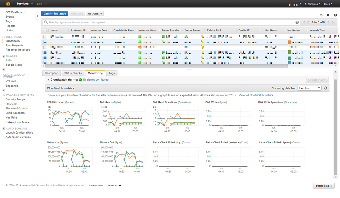Figure 9: Monitoring instances using cloud watch
To complete the test, you have a maximum of 30 minutes to reach your target RPS of 4000.
Tasks to Complete:
- Write code in Python, Java or shell script using the AWS APIs to launch a m3.medium load generator instance.
-
In the same program write code to launch a m3.medium data center instance and start the horizontal scaling test by requesting the URL: http://<your-load-generator-instance-dns-name>/test/horizontal?dns=<your-instance-dns-name>. The response will contain the testId which you need to save for use later in querying the current RPS.
- Monitor the current RPS by parsing the logs available at http://<your-load-generator-instance-dns-name>/log?name=test.<testId>.log (INI parsers available for Java and Python are highly recommended).
- If the current RPS is less than the required RPS (4000), spin up a m3.medium instance through code and add it to the load generator by calling the URL: http://<your-load-generator-instance-dns-name>/test/horizontal/add?dns=<your-instance-dns-name>.
- Once the target RPS has been met, quit the program. Do not terminate your instances.
Warning
Monitor the number of instances launched by your code carefully as faulty logic can spin up too many instances burning through your budget.
Notes and Suggestions
- Please make sure you start with a blank slate. All your instances must be launched by your code. Your security group should also be created by your code. All data center instances (except for the first one) should be launched after the test starts. The autograder checks for this.
All instances must be tagged.
- Since you need to achieve the target RPS of 4000 within 30 minutes, you might want to avoid spot instances for Horizontal Scaling Test (please use spot instances for the Vertical Scaling Test if the spot price is lower than the on-demand price). Can you think of a reason why we are recommending against using spot instances in Horizontal Scaling Test?
- It takes time for your Data Center Instance to be ready to receive traffic at /track/device. The 'running' state of that EC2 instance does not necessarily mean that it is ready. Try to find a better way/time to add Data Center instance to Load Generator.
- Make sure your code processes the current requests per second and then decides whether to launch another instance.
- Do not hardcode the number of instances into the code.
- Your code should not launch multiple data center instances simultaneously. MSB will check if any pair of data center instances have a launch time within 2 minutes(100 seconds actually) of each other.
- Your code should not terminate the instances at the end of the test, we will have one more task after this.
- Try a dry run without code (using only the browser), if you want to get a feel for the process.
- If you are unfamiliar with how to submit an HTML form using code, view the process on your browser.
- Launching all instances within the same subnet should yield a better performance than having them in different subnets.
- The test log files are in the ini format. You might want to consider using ConfigParser library in python and ini4j in Java to parse them.
- Your code for this part of the project will be manually graded by the MSB instructors. Please follow the instructions for code upload and write neat, well commented code. Your score for the code will be updated once it is manually graded.
Note: Do not terminate your instances yet.
At this point, you should look back and understand the limitations of this method:
You have a load generator, and several data center instances trying to ingest data from it. Everytime you add an instance, you need to inform the load generator, which must perform some computations to begin sending traffic to the new Data Center VMs. However, how can you make sure that all instances get an equal amount of traffic? What would happen if you wanted to remove an instance? Or if an instance failed? How would you even monitor if an instance failed?
To be able to address these shortcomings (and for many other benefits), Amazon has a service known as Elastic Load Balancing that automatically divides traffic to connected instances and also handles instance failures. As with any new technology, there are trade-offs, some of which we hope to introduce you to in the coming modules.
Elastic Load Balancer Test
The Elastic Load Balancer acts as a network router that will forward incoming requests to multiple EC2 Instances sitting behind it in a round-robin fashion. Round-robin scheduling is not perfect, but it can do an adequate job given a large number of users, each with relatively simple requests. Can you think of any situations in which round-robin scheduling is not perfect?
The Instances that ELB points to can be added manually through the web console, programmatically through an API, or dynamically with an Auto Scaling Group. ELB also does a Health Check to see if the instance is alive (if not, it will stop sending requests to it). Using an ELB costs $ 0.025 per hour + $ 0.008 per GB transferred through it.
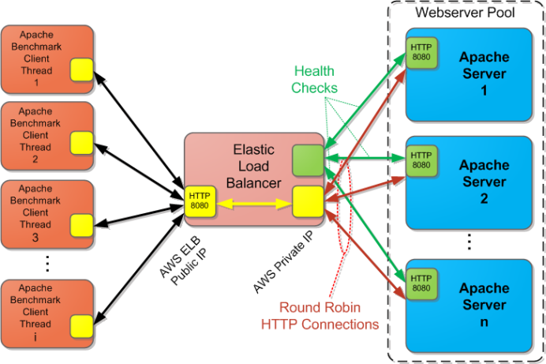Figure 10: An Elastic Load Balancer
The following video covers the basics of ELB:
Video 2: Elastic Load Balancing
Tasks to Complete:
-
Please register all running data center instances your code created in the previous step (not the load generator) with the Elastic Load Balancer. Use the ELB Console on the Amazon website. We do not expect you to complete this task programmatically using the APIs.
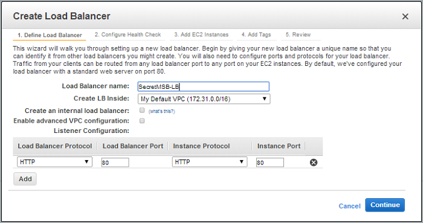
-
For the health-check, you should use the /heartbeat page. Do not use a different page for the heartbeat, as we are running validation code on this page to test if you really used it.
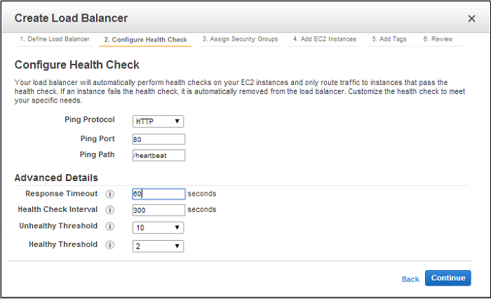
-
Wait for the instances to be “in-service”
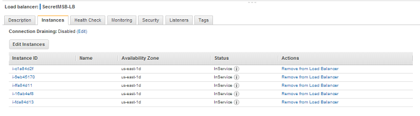
-
Then visit the URL:http://<your-load-generator-instance-dns-name>/test/elb
Observe the minute-wise logs and monitor the utilization on the EC2 as well as ELB console. Once again, this is at: http://<your-load-generator-instance-dns-name>/log?name=test.<testId>.log
-
This test takes 15 minutes to complete.
Figure 11: Creating an ELB
Figure 12: Configuring ELB health check
Figure 13: Waiting for the instances connected to the ELB to be in-service
How did performance using the ELB compare with the earlier performance? Was the RPS higher or lower with ELB compared to what you had achieved earlier? Why do you think that is the case?
Try to run more ELB tests if you have budget left. Could you explain why the test results are different?
Note
Your code may possibly launch an extra data center instance or two towards the end after the RPS has been met. For the ELB test add only the data center instances you see in the last minute of the test log.
MSB Recruitment Knowledge Test
Once you are done with the ELB test, please proceed to take the test by going to http://<load-generator-dns-name>/test/knowledge on the Load Generator.
Code Submission
Once you are done with the MSB Recruitment Knowledge Test (We are sure you aced it after all the training that we gave you!), please submit the code you used for the Horizontal Scaling Test by clicking on the Code Submission link in the Load Generator interface. You have to upload a .zip which has your source code (*.java, *.py or *.sh) and a file containing all the references you have used (file should be called 'references'). Please note that the references file is compulsory.
Please do not include any library (*.jar) or credential (*.pem,access_key.csv) files in your .zip.
Your code will be graded manually.
Project Grading Penalties
Besides the penalties mentioned in recitation and/or on Piazza, penalties accrue for the following:
| Violation | Penalty of the project grade |
|---|---|
| Spending more than $8 for this project phase | -10% |
| Spending more than $16 for this project phase | -100% |
| Failing to tag all your instances for this project | -10% |
| Submitting your AWS credentials in your code for grading | -10% |